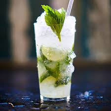

Need a Little Inspiration?

Recipe 1: The Classic Mojito
Recipe 1: The Classic Mojito
Ingredients
- 2 Ounces light rum
- 2 Teaspoons sugar
- 6-8 fresh mint leaves
- 1 lime (cut into 2 halves)
- Garnish: mint sprig
- Small cup of Club Soda: mint sprig
- Small tray of ice cubes
Method
- Place the sugar, mint leaves, and a splash of club soda into a highball glass
- Muddle well to disolve the sugar and to release the flavour of the mint
- Squeeze the huice from both halves of a lime into the glass, dropping one-half into the glass
- Add the rum
- Stir well
- Fill the glass with ice cubes
- Top with club soda
- Garnish with a mint sprig

Recipe 2: Sex on the Beach
Ingredients
- 9ml of Archers Peach Schnapps
- 35ml of Smirnof No.21 Vodka
- 35ml Orange Juice
- 35ml Cranberry Juice)
- Small tray of ice cubes
Method
- Fill a glass with ice
- Pour Archers Peach Schnapps, No.21 Vodak, Cranberry juice and orange juice into a glass Love it

Recipe 3: Passion Fruit Martini
Ingedients
- 2 ripe passion fruits (they should have a crinkly appearance), halved
- 60ml vanilla vodka
- 30ml passoa
- 1tbsp lime juice
- 1tbsp sugar syrup
- Prosecco to serve
- Small tray of ice cubes
Method
- Scoop the seeds from one of the passion fruits into the glass of a cocktail shaker
- Add the vodka, passoa, lime juice and sugar syrup into the glass
- Add a handful of ice and shake well
- strain into 2 martini glasses and top up with prosecco
- Add half a passion fruit to each. Serve immediately
Love it

Recipe 4: Bloody Mary
Ingredients
- 1/4 cup of tomatoe juice
- 2 tbsp vodka (any)
- 1 tsp Worcestershire sauce
- 3/4 tsp freshly grated horseradish
- 3 dashes hot pepper sauce e.g Tabasco
- 1 pinch salt
- 1 dash of freshly groun black pepper
- Small tray of ice cubes
- 1/4 tsp fresh lemon juice
- 1 stalk celery
- 1 lemon wedge (optional)
Method
- In a 11 ounce highball glass, stir together the tomato juice, vodka, Worcestershire sauce, horseradish, hot sauce, salt and pepper
- Fill the glass with ice
- Pour the mixture into another glass - not the one containing ice
- Pour back and fourth between the glasses 3 to 4 times to mix weell
- Sprink lemon juice over
- Garnish with celery stalk and lemon wedge
Love it